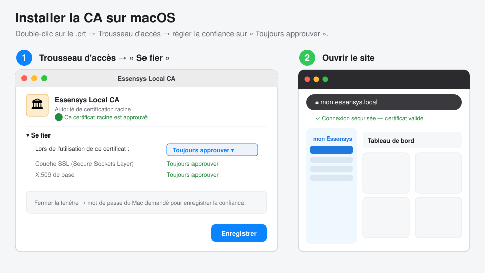
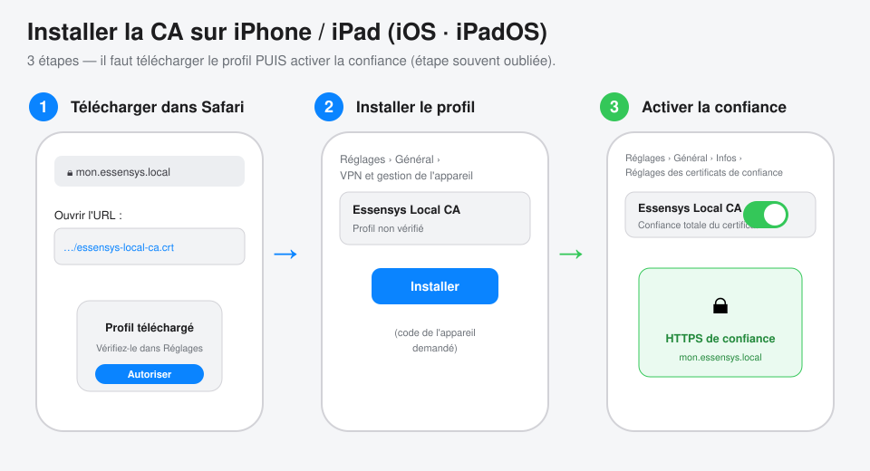
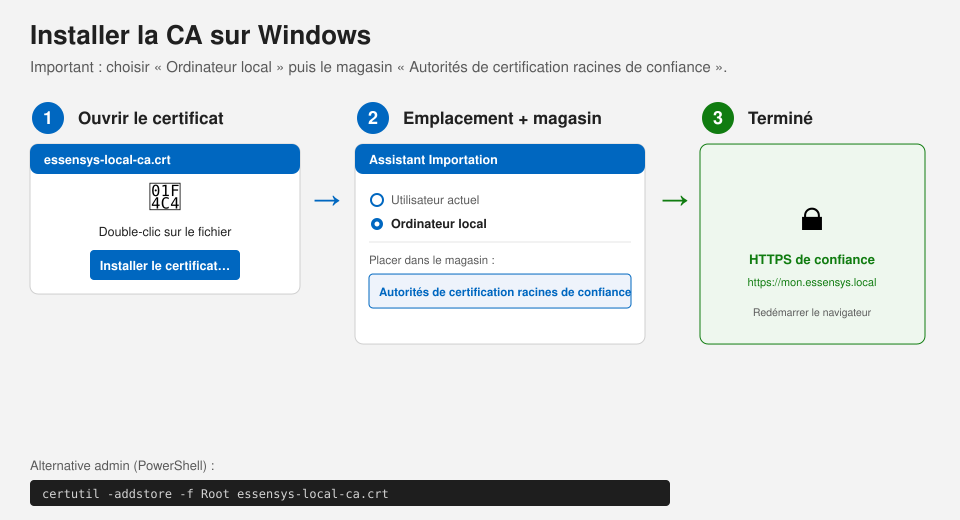
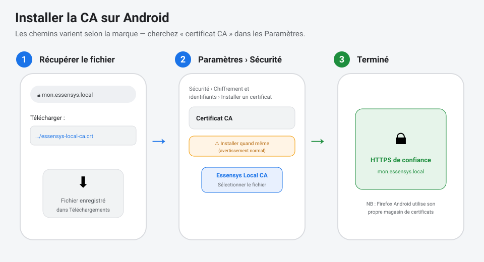

Guide utilisateur — Accéder à https://mon.essensys.local en sécurité
Ce guide explique comment configurer un appareil (Mac, iPhone/iPad, PC Windows, téléphone Android) pour accéder à l'interface Essensys locale en HTTPS sans avertissement de sécurité.
Pourquoi cette étape ? L'interface locale est servie en HTTPS par un certificat signé par l'autorité interne « Essensys Local CA ». Comme cette autorité n'est pas une autorité publique (impossible pour un domaine
.local), chaque appareil doit l'installer une seule fois. Ensuite, le cadenas est vert et tout fonctionne normalement.
C'est une opération sûre : vous installez uniquement l'autorité de votre propre passerelle Essensys, sur votre réseau local.
En résumé (les 3 idées)
- Récupérer le fichier d'autorité
essensys-local-ca.crt. - L'installer comme autorité de confiance sur l'appareil.
- Ouvrir
https://mon.essensys.local→ cadenas vert. ✅
Où récupérer le fichier essensys-local-ca.crt ?
- Téléchargement direct (sur le réseau Essensys) :
https://mon.essensys.local/essensys-local-ca.crtAu tout premier accès, le navigateur affichera un avertissement : c'est normal, vous téléchargez justement l'autorité qui le fera disparaître. Continuez.
- Ou demandez le fichier à votre administrateur (envoi par AirDrop / e-mail).
🍎 macOS

- Récupérez
essensys-local-ca.crtet double-cliquez dessus : il s'ouvre dans Trousseau d'accès, dans le trousseau Système (ou « Connexion »). - Double-cliquez sur « Essensys Local CA », dépliez « Se fier », et réglez « Lors de l'utilisation de ce certificat » sur « Toujours approuver ». Fermez la fenêtre (mot de passe Mac demandé).
- Ouvrez
https://mon.essensys.local— redémarrez le navigateur si besoin. La barre d'adresse indique alors « Connexion sécurisée », sans avertissement.
✅ Vérifié en conditions réelles : après installation de la CA,
https://mon.essensys.local/dashboardse charge dans le navigateur sans aucune alerte de sécurité.Astuce admin (en une commande, mot de passe demandé) :
bash sudo security add-trusted-cert -d -r trustRoot \ -k /Library/Keychains/System.keychain essensys-local-ca.crt
📱 iPhone / iPad (iOS · iPadOS)

- Dans Safari, ouvrez
https://mon.essensys.local/essensys-local-ca.crtet acceptez le téléchargement du profil. - Réglages › Général › VPN et gestion de l'appareil → ouvrez le profil « Essensys Local CA » → Installer (code de l'appareil demandé).
- ⚠️ Étape indispensable : Réglages › Général › Infos › Réglages des certificats de confiance → activez l'interrupteur en face de « Essensys Local CA ».
- Ouvrez
https://mon.essensys.local. ✅
🪟 Windows

- Double-cliquez sur
essensys-local-ca.crt→ Installer le certificat… - Choisissez « Ordinateur local », puis « Placer tous les certificats dans le magasin suivant » → « Autorités de certification racines de confiance ».
- Terminez l'assistant, redémarrez le navigateur, puis ouvrez
https://mon.essensys.local. ✅
Astuce admin (PowerShell en administrateur) :
powershell certutil -addstore -f Root essensys-local-ca.crtNote : Firefox utilise son propre magasin — voir la section dédiée.
🤖 Android

- Téléchargez
essensys-local-ca.crt. - Paramètres › Sécurité › Chiffrement et identifiants › Installer un certificat › Certificat CA (les libellés varient selon la marque — cherchez « certificat CA »). Validez l'avertissement.
- Sélectionnez le fichier téléchargé. Ouvrez
https://mon.essensys.local. ✅
🦊 Firefox (tous OS)
Firefox n'utilise pas le magasin du système : il faut l'importer dans Firefox.
- Paramètres › Vie privée et sécurité › Certificats › Afficher les certificats
- Onglet « Autorités » → Importer… → choisir
essensys-local-ca.crt - Cocher « Confirmer cette AC pour identifier des sites web » → OK.
❓ Dépannage
| Symptôme | Cause / Solution |
|---|---|
| Toujours « non sécurisé » après install | Redémarrer complètement le navigateur (sur Chrome/Mac : Cmd+Q puis rouvrir). |
mon.essensys.local introuvable |
Être connecté au réseau Essensys ; la résolution se fait en mDNS/Bonjour sur le LAN. |
Avertissement au téléchargement du .crt |
Normal au 1ᵉʳ accès (HTTPS pas encore de confiance) — continuer. |
| Firefox affiche encore l'erreur | Firefox a son propre magasin → faire la section Firefox ci-dessus. |
Cadenas OK sur mon.essensys.fr mais pas .local |
mon.essensys.fr utilise un certificat public (rien à installer) ; .local nécessite la CA. |
Public : utilisateurs finaux. Détails techniques (architecture, rôle Ansible, rotation/révocation) : voir tls-local-domain.md.